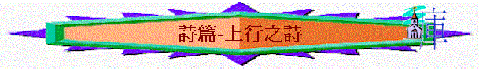

|
律法詩 |
詩中之詩 |
預言詩 |
認罪詩 |
時間/朝昏之詩 |
人生之詩 |
上行之詩 |
安慰之詩 |
信心之詩 |
歷史之詩 |
詩篇１２０－１３４篇，共有十五篇。
Ｉ．作者：
Ａ．大衛：第１２２，１２４，１３１，１３３篇
Ｂ．大衛之子所羅門：第１２７篇
Ｃ．其他沒有著明作者。
ＩＩ．意思：
Ａ．登階之詩
「上行」一詞包含了台階、階段和等級，以及上升、登上、爬上等意思，故又稱「登階之詩」。縱觀這十五篇詩，是被一個逐漸加強向上、上升、上爬的觀念所貫通，每 一篇皆比前一篇向前跨一步。
Ｂ．上殿之詩／敬拜之詩
朝聖者上耶路撒冷朝見神，在路上所唱的詩歌。
ＩＩＩ．背景：
Ａ．有說是朝聖者每年上耶路撒冷守節時，在路上邊行邊唱的詩歌。
根據律法（出２３：１４－１７及申命記），所有以色列的男丁必須一年三次朝見耶和華。以色列國中的公民，凡是男的都必須一年三次從各處前來耶路撒冷向神奉獻：即無酵節，收割節和在猶太曆末了的收藏節。無論他們住在那�堙A他們都必須離開自己的家園，旅行前往耶路撒冷，要朝見神。當這些朝聖者從各處往耶路撒冷時，有時他們在路上相遇，因此成了一大群人。他們一路前行時，就引聲歌唱這十五篇詩。詩篇１２２：４說出了這個意思：「眾支派，就是耶和華的支派，上那�堨h，作以色列的證據（小字）稱讚耶和華的名」，因為以色列的眾支派，都要旅行上耶路撒冷去敬拜耶和華。
Ｂ．有說這是祭司們在聖殿�堸菄爾痋C
他們進入耶和華的殿，要到外院有七個台階，然後再走八個台階才上到內院；總共有十五個台階。很可能在百姓們一同上來要敬拜耶和華時，供職的祭司每上一階就唱一首詩。
Ｃ．也有說是以色列百姓的餘民，從被擄之地歸回時唱的。
他們因背逆了神，被擄到巴比倫去；雖然如此，由於神的憐憫，他們被擄七十年後，蒙神恩領歸回到猶大地。詩篇１２６篇正說出這個意思。
ＩＶ．特色
Ａ．篇幅短，最長只有１８節。
Ｂ．結構上，前後常用重複的字句。這是希伯來特殊體裁，也是為互相唱和之用。
Ｖ．十五篇上行之詩的綜欖
Ａ．
到神面前來分五組 第一組 第二組 第三組 第四組 第五組
以色列的痛苦
１２０蒙允 １２３仰望 １２６復興 １２９得勝 １３２敬拜耶和華的幫助
１２１蔭庇 １２４幫助 １２７安然 １３０等候 １３３相愛錫安的平安
１２２愛神 １２５倚靠 １２８敬畏 １３１平靜 １３４稱頌
Ｂ．信徒靈命之上行歷程
分三組
潔淨 光照 聯合１２０拯救 １２５倚靠 １３０破碎
１２１保守 １２６轉變 １３１謙卑
１２２平安 １２７建造 １３２愛神
１２３憐憫 １２８結果子 １３３愛人
１２４逃脫 １２９受苦 １３４儆醒事奉